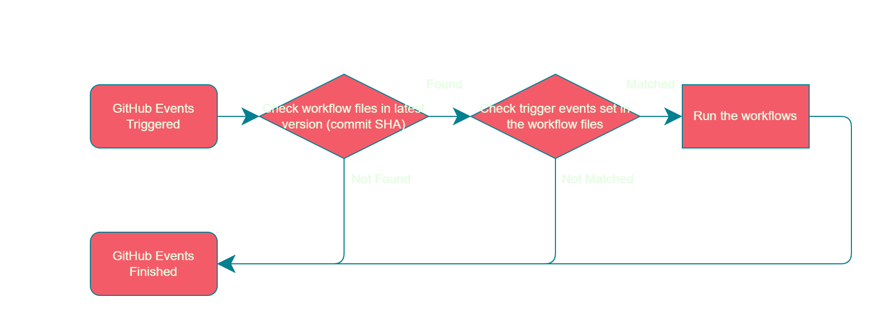

GitHub Actions 笔记
这段时间里总是在跟 GitHub Actions 打交道。GitHub Actions 这个功能本身也在不断的迭代中，而且它的文档还有很多不完备的地方，导致我踩了很多坑。
今日心血来潮，记录一下我能回忆起来的要点，以备日后使用。

踩坑记录
添加 workflows 文件要谨慎
GitHub Actions 只会执行相应 branch 里.git/workflows/**目录下的工作流文件。这也就意味着：
每一个需要执行 Actions 的 branch 都必须添加 相应的 workflows 文件。
一旦 workflows 需要变更，就必须变更所有 branch 里的每一个 workflows 文件，否则不同 branch 间的动作情况将会不一致，并且 Actions 的界面里触发的工作流将会分属不同的 workflows，进一步引发混乱。
workflows 文件中
on.<push|pull_request>.<branches|tags>虽说可以指定由哪些 branch 来触发这个工作流，但这本质是个 filter，你首先得把它放到相应的 branch 里，让它变得能被触发才行。就像这里 Github Action: Trigger a workflow from another branch 说的：
We have no method to trigger a workflow in a branch by the push event occurs in another branch.
Every workflow run has two important properties branch/tag ref (github.ref) and commit SHA (github.sha). Each workflow has only one branch/tag ref and only one commit SHA.
When you push a new commit to the feat branch in your repository, generally GitHub will do the following things before triggering workflows.
In the feat branch, check if there is any workflow file in the latest version (commit SHA) of the repository files. If no any workflow file, no workflow run will be triggered.
If find some existing workflow files, check the trigger events set in the workflow files. Whether the event names (github.event_name) have included push event, and the branches filter have includes feat branch. If no matched trigger events in the workflow files, no workflow run will be triggered.
If have matched trigger events in the workflow files, trigger the workflows that have the matched trigger events.
可以执行 private 的 Actions
尽管不是一项正式的用法，但 GitHub Actions 允许通过jobs.<job_id>.uses加载写在 private 仓库里的 action。
{owner}/{repo}/{path}/{filename}@{ref}
虽然除了“运行指定的workflow.yaml”之外，现在的官方文档中没有提及这个直接加载一个项目的功能。但根据 GitHub 社区的回答，曾经是有这个功能的。 现在这个功能又回来了，官方文档举了好几个例子来解释它的用法：
可以遵循以下方法：
1 | |
GitHub Actions 运行 AWS ECR 容器
之前一直用上面那个方法来执行一个 private 的 actions。但每次执行之前都需要actions/checkout@v2来 build 这个镜像，非常浪费时间。所以我希望能借助类似于 Docker Hub 的服务来存储我的镜像，使用的时候就可以直接 pull，这样就能节省 build 镜像的时间。
考虑到我司已开通 AWS Elastic Container Registry 服务，我决定把这个 docker 放在 ECR 上。
1 | |
jobs.<job_id>.container的运行解释
但实际执行过程中，我在 Dockerfile 里定义的 Enterpoint 根本没有被执行。我在options参数里指定--entrypoint "python3 src/main.py"也没有效果。更令人费解的是，执行python src/main.py的时候根本找不到src/main.py文件。
我一度怀疑进入steps之后，整个程序进入了另一个由 repo 组成的 container 中。经过反复调试和分析日志，我意识到，是steps当前的位置有问题，它的pwd是/__w/<repo-name>/<repo-name>。
大致的过程应该是这样的：
检查当前 docker 程序的版本
workflow_run 环境
1
2/usr/bin/docker version --format '{{.Server.APIVersion}}'
/usr/bin/docker version --format '{{.Client.APIVersion}}'清理前一个 job 的遗留，避免发生冲突
workflow_run 环境
1
2/usr/bin/docker ps --all --quiet --no-trunc --filter "label=<docker镜像的label>"
/usr/bin/docker network prune --force --filter "label=<docker镜像的label>"在本地新建一个给 container 用的虚拟网络
workflow_run 环境
1
/usr/bin/docker network create --label <docker镜像的label> <要创建的虚拟网络id>Starting job container
workflow_run 环境
1
2
3
4
5
6
7
8
9
10
11
12
13
14
15
16
17
18
19
20
21
22
23
24
25
26
27
28
29
30
31
32
33
34
35
36# 登陆
/usr/bin/docker login ******.dkr.ecr.ap-northeast-1.amazonaws.com
-u AWS
--password-stdin
--config /home/runner/work/_temp/.docker_***
# 下载我在 ECR 上的镜像
/usr/bin/docker pull ******.dkr.ecr.ap-northeast-1.amazonaws.com/db-gitops:latest
--config /home/runner/work/_temp/.docker_***
# 从镜像中产生一个 container：5db618ea9ee2161e7954ff04c1b60cbd14048f59340db3233598fe861608dd4a
/usr/bin/docker create ******.dkr.ecr.ap-northeast-1.amazonaws.com/db-gitops:latest "-f" "/dev/null"
--name <新生成的container名>
--label <docker镜像的label>
--workdir /__w/<repo名>/<repo名>
--network <刚才创建的虚拟网络id>
--entrypoint "python3 src/main.py"
-e "HOME=/github/home"
-e GITHUB_ACTIONS=true
-e CI=true
-v "/var/run/docker.sock":"/var/run/docker.sock"
-v "/home/runner/work":"/__w"
-v "/home/runner/runners/2.285.1/externals":"/__e":ro
-v "/home/runner/work/_temp":"/__w/_temp"
-v "/home/runner/work/_actions":"/__w/_actions"
-v "/opt/hostedtoolcache":"/__t"
-v "/home/runner/work/_temp/_github_home":"/github/home"
-v "/home/runner/work/_temp/_github_workflow":"/github/workflow"
--entrypoint "tail"
# 开始刚才生成的那个 container
/usr/bin/docker start 5db618ea9ee2161e7954ff04c1b60cbd14048f59340db3233598fe861608dd4a
# 确认这个 container 有没有运行起来
/usr/bin/docker ps
--all
--filter id=5db618ea9ee2161e7954ff04c1b60cbd14048f59340db3233598fe861608dd4a
--filter status=running
--no-trunc
--format "{{.ID}} {{.Status}}"Waiting for all services to be ready
workflow_run 环境
没啥，就是 waiting
然后进入steps阶段
注意，现在进入了 container 环境
此时的
--workdir就是/__w/<repo名>/<repo名>。所以如果我想执行我封装在镜像里的程序，我首先应该回到根目录！1
2
3
4
5steps:
- name: Run my Python
run: |
cd /
python3 /src/main.py
完整的workflows.yml
1 | |
Trigger Events 归纳
记录一下不同操作所触发的事件。
| 用户的操作 | 触发的事件 | 活动类型 | 备注 |
|---|---|---|---|
| 创建PR | pull_request |
opened |
|
| 关闭PR | pull_request |
closed |
|
| 重开PR | pull_request |
reopened |
|
| 分配任务 | pull_request |
assigned |
|
| 指定reviewer | pull_request |
review_requested |
|
| reviewer通过代码 | `` | `` | |
| reviewer拒绝通过 | `` | `` | |
| 合并分支 | 1. pull_request2. push |
closedn/a |
先后触发了两个事件 |
| 创建分支 | 1. create2. push |
n/a n/a |
先后触发了两个事件 |